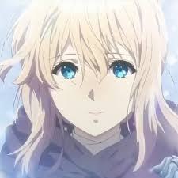
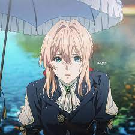
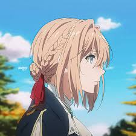

Violet Evergarden é um anime que se passa em um cenário pós-guerra. Mostrando a história de Violet, que foi treinada para ser uma “arma de guerra” ou “Máquina de combate”. Um “objeto” sem emoções usado para as situações mais pesadas por ter uma grande habilidade.Mas após a guerra ela entra no caminho para se tornar uma autômata de automemórias. Mas nesse caso são mulheres que escrevem cartas para outras pessoas tentando ao máximo colocar o sentimento daquela pessoa para quem quer que vá receber.Violet passa o anime tentando entender o sentimento do amor depois que o major, Gilbert, revela seus sentimentos no final da guerra.
Para quem pensa que Violet Evergarden é algo feito apenas de aspectos visuais, está totalmente enganado, pois a obra apresentou ser boa por si só, incluindo seus personagens, até mesmo os momentâneos. Com o desenrolar da trama os laços com os intérpretes vão se desenvolvendo, principalmente com a protagonista, que evolui com o decorrer da série e das interações que acaba construindo; foi realmente uma personagem bem-feita e bem-explorada, com o passar de sua jornada e experiências, mais conhecimento sobre si mesma e seus sentimentos.Cada movimento, olhares e cenários acabam ganhando grande destaque, pois possui tantos detalhes que parar e voltar cenas só para admirar pode ser normal. Os olhos possuem brilho e, de certa forma, vida, assim como os cabelos têm movimentos naturais...
A cronologia do anime possui uma série de episódios e alguns filmes e vale a pena assistir todos!! Para quem gosta de se emocionar não ira se arrepender.
É realmente lindo de se ver e pra quem gosta de assistir um anime de drama,esse é ideal. Caso tenha se interessado,existem alguns sites para assistir. Violet Evergarden é um anime licenciado no Brasil exclusivamente pela aclamada e mundialmente conhecida Netflix e, como de costume, essa magnífica empresa produziu uma versão dublada para o nosso idioma.
𝓕𝓮𝓲𝓽𝓸 𝓹𝓸𝓻 𝓔𝓭𝓿𝓪𝓻𝓭𝓪 𝓔𝓵𝓮𝓷 ━ I2A ☾